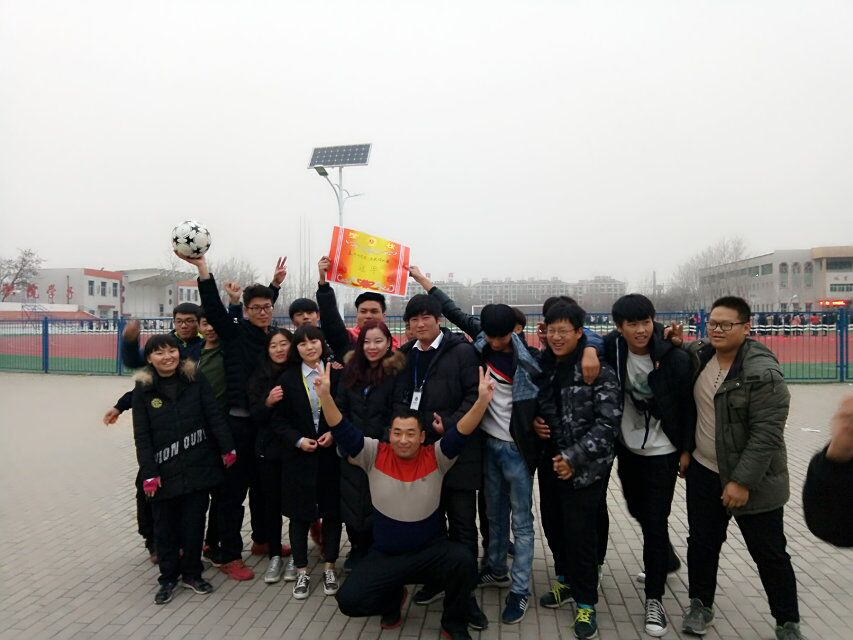
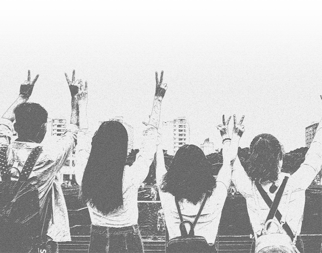

正/青/春/是/一/场/旅/行
时光匆匆，当我伸手去拦时，它却如悄悄地从指边溜掉了。我的大学生活就如这流水般缓缓而又匆匆地 流淌着到了她的尽头，留给我的，是无尽的感慨收获和即将入海的宽广无限。
时光不老，我们不散

林荫下我们留下过足迹，食堂里我们大快朵颐，自习室里的身影依然清晰，图书馆内弥漫着我们的气息、毕业了， 记忆仍然萦绕在脑海里，期待着他年我们再相聚。
这个时候，对我而言。最大的意义就是能够告诉所有的朋友，谢谢你们将最美好的时光与我分享 ，在我的生命中留下那么重要的位置。
命运让我们走到同一天空下，一起追逐，一起成长，一起欢笑，无数个纵情欢乐的白天，无数个推心置腹的夜晚，无数个绚烂而单纯的时刻，我们一起创造， 一起经历，一起看着我们走过的一切，在熟悉的校园里，慢慢变成永远的回忆。
那些陪伴、见证彼此慢慢改变、成熟长大的过程才是最宝贵的财富！
时光不老，我们不散
年幼的孩子憧憬青春，青春对他们来说是个充满梦幻的童话;成熟的青年纪念青春，青春就像一幅油墨未干的画;年迈的老人怀念青春， 青春已是他们珍藏的泛黄的老照片。青 春，多么美好的字眼，任何人都想拥有它，正处于青春这段美好时光的我们，怎么有理由不去珍惜它
